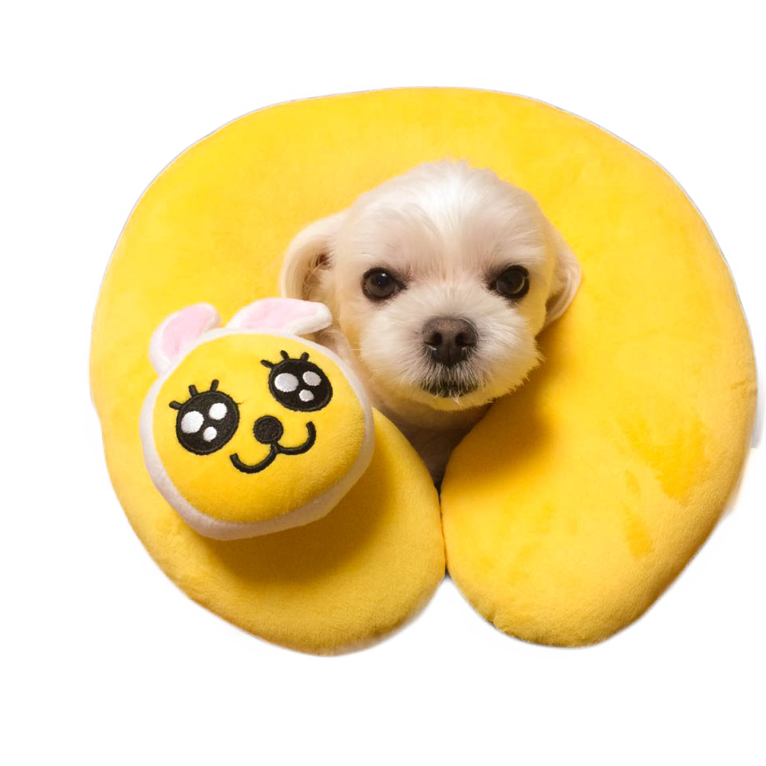

Garment and UV Printing
This week's task was to design and print our own T-shirt, using the Brother GT-361 printer.
This is the original picture of my dog that I chose to put on my T-shirt.

Then, using Adobe Photoshop, I touched up the photo a bit, and cropped it as I want it to show on my T-shirt.
This is the picture after the process.

Then, I opened up the file in a program called "PDIP 1.2" and adjusted the picture to a place where I wanted it to be printed on the shirt.
This is my final product of my T-shirt Printing!